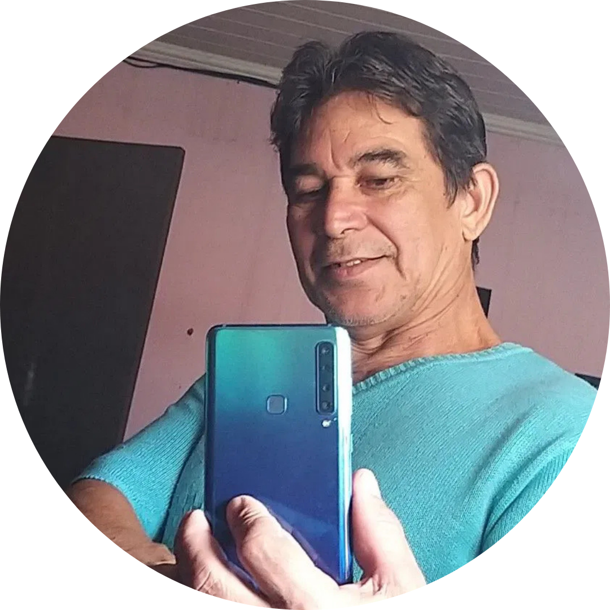

QUESTA PREGHIERA ERA NASCOSTA... MA OGGI VERRÀ RIVELATA | IN DIRETTA ALLE
Questo video verrà rimosso immediatamente al termine della diretta... (Non aggiornare e non uscire da questa pagina)
CHAT DAL VIVO
@marco_rossi47
sono arrivato presto… vediamo 🙏
@sofia.bianchi_
qualcun altro si è appena collegato?
D
@davide_romano
sento qualcosa di speciale in questo…
M
@matteo_roma
in ascolto da Roma 🇮🇹
@emilia.ferrari_
pace a tutti voi qui ✨
C
@claudio_marini21
Non so bene cosa sia ma rimango
A
@antonio_vitali
saluti da Milano 🙌

@michele_santi
In ascolto dalla Parrocchia di San Benedetto 🙏
R
@rosa_esposito_
Amen 🙏
D
@daniele.moretti88
Amen 🙏 Dio benedica tutti qui
V
@vittorio.s_
🙏🔥
@angela_ricci
Questo sacerdote ha aiutato tante persone qui
T
@teresa_bellini
Amen
S
@samuele_fede
Dio agirà oggi 🔥
P
@pietro.alberti
Gloria a Dio 🙏
T